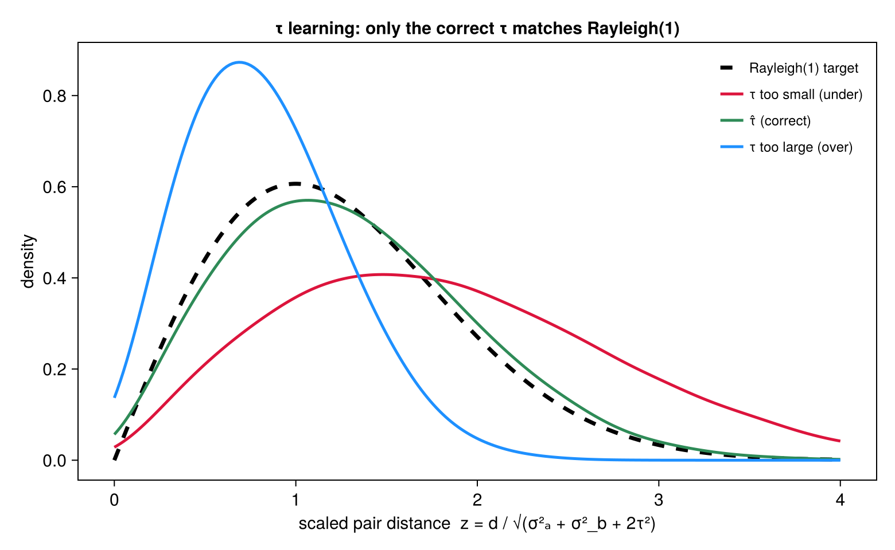
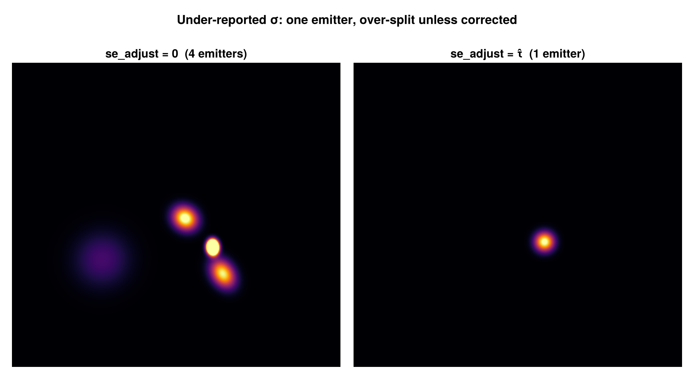

Uncertainty Correction
BaGoL's accuracy rests on the reported localization uncertainties $\sigma$ being correct. When they are underestimated by a common amount $\tau$, within-emitter localizations look too spread out for their error bars, and BaGoL over-splits — one true emitter becomes several. estimate_se_adjust recovers $\tau$ from the data and apply_se_adjust folds it in (se_estimate.jl).
The Rayleigh statistic
At the true $\tau$ and the correct grouping, the scaled separations of within-emitter localization pairs follow a Rayleigh(1) law. For a within-group pair with separation $d$,
\[z = \frac{d}{\sqrt{\sigma_a^2 + \sigma_b^2 + 2\tau^2}} \;\sim\; \mathrm{Rayleigh}(1), \qquad F(z) = 1 - e^{-z^2/2}.\]
The finder estimates $\tau$ by minimizing the Kolmogorov–Smirnov distance between the empirical CDF of the $z$ and this reference:
\[\hat{\tau} = \arg\min_{\tau}\ \max_i \left| \frac{i}{n} - \big(1 - e^{-z_{(i)}^2/2}\big) \right|.\]

The distribution of scaled within-emitter pair distances $z$ at three values of $\tau$: too small ($\tau = 0$, shifted right — localizations look over-spread), correct ($\hat\tau$, matching the Rayleigh(1) target), and too large (shifted left — over-merged). The estimator picks the $\tau$ whose empirical distribution best matches Rayleigh(1), via the Kolmogorov–Smirnov criterion above.
Self-consistent root search
Grouping depends on $\tau$ and $\tau$ depends on the grouping, so the estimate is the self-consistent value $\tau^*$ with $m(\tau^*) = \tau^*$, where $m(g)$ is built from two steps:
- E-step — regroup the data with a temporary BaGoL run at $g$ (using BaGoL's own Dahl-consensus labels);
- M-step — find the KS-minimizing $\tau$ on that frozen grouping (right-biased, to preserve same-emitter spread; interpolating the threshold crossing between grid points removes grid quantization). Grouping changes and E-step noise mean $m(g)$ is still only approximately continuous.
Nonfinite KS grid values carry no information and are ignored in the right-biased pick and its threshold crossing; interpolation uses neighboring finite samples. If none are finite, the M-step returns NaN and the search stops without convergence.
The initial M-step grid is grid_um=0.0:0.0001:0.014 (0–14 nm). When its top qualifies under the right-biased KS rule, the grid extends at its own last step, reusing KS values and doubling its top up to tau_max_um=0.05 (50 nm). This changes no statistic: it evaluates the same continuous right-biased KS rule over the range the data need. The cap is numerical, not a prior; it must be at least the initial grid top, and the grid must contain at least two points. Later E-steps reuse the extended grid, and their neighbor graph grows when needed.
The method requires an over-merged start, g_start_um above the root, clamped into (minimum(grid_um), tau_max_um). The unchanged default g_start_um=0.008 (8 nm) suits τ below 8 nm. For larger τ, such as 16 nm, pass a larger start such as g_start_um=0.03. Starting below the root can climb through under-merged groupings that are self-consistent at a too-small τ. The result reports start_overmerged=true only when the first E-step has m(g_start) < g_start (false without an evaluation). When m(g_start) ≥ g_start, the finder warns with both values in nm and advises a start above the expected τ. run_bagol(se_adjust=:auto) adds "; start below the root" to its progress note when start_overmerged=false. For a larger start, call estimate_se_adjust directly and pass its estimate as a numeric se_adjust to run_bagol.
The finder searches for the root of $r(g) = m(g) - g$ with secant steps and a sign-change bracket (Illinois regula falsi). The search stops when the root is bracketed within 2·stoptolum; τ̂ interpolates inside that bracket. More precisely, converged=true requires either an exact $r = 0$ or measured endpoints $r(a) > 0 > r(b)$ with $b - a \le 2\,\mathtt{stop\_tol\_um}$. Each bracketed proposal stays at least stop_tol_um from either end, with bisection as a fallback. The returned $\hat\tau$ is the linear-interpolation root inside the final bracket, so for a root $g^*$ inside it, $|\hat\tau - g^*| \le b - a \le 2\,\mathtt{stop\_tol\_um}$ on a width stop. The result reports this bracket as bracket_um, or (NaN, NaN) without one (including an exact root found before bracketing).
If an M-step's top still qualifies at the cap, the search stops with censored=true and converged=false and emits a warning: the grouping prefers τ above the cap, which can indicate over-merging or a model mismatch. The returned tau_hat_um is then the cap, a lower bound rather than a root. The result also reports grid_top_um (the final M-step grid top) and tau_max_um; diagnostic grid_nm and ks_path use that final grid.
The bracket guarantees a sign change of the measured residual, not continuity or uniqueness of a root. Agreement across starts is measured behavior on real data, not a guarantee for starts below the root. A spatial-block bootstrap uses the grouping nearest $\hat\tau$, or the censoring E-step's grouping when censored, for a 95% confidence interval conditional on that grouping. The same grouping supplies ks_at_hat, diagnostics and bootstrap censor counts. The bootstrap uses the same extending M-step and cap independently in each replicate and excludes nonfinite replicate estimates before calculating quantiles; n_boot_censored counts replicates censored at that cap. The estimator is isotropic: it uses one per-localization uncertainty (the reported $\sigma_x$) and a single scalar $\tau$, so it is intended for data with roughly isotropic localization precision.
Applying the correction
apply_se_adjust inflates each localization's uncertainty in quadrature, per axis:
\[\sigma_x' = \sqrt{\sigma_x^2 + \tau_x^2}, \qquad \sigma_y' = \sqrt{\sigma_y^2 + \tau_y^2},\]
after which the corrected $\sigma'$ propagates into every precision $\Lambda_i$ of the collapsed representation. Set se_adjust=:auto to run the finder and apply its result, or pass a known number directly. :auto throws an ErrorException before applying a censored result, since the cap is a lower bound that could over-merge the field. Pass a numeric se_adjust (μm), or estimate τ on a subset with estimate_se_adjust. Uncensored estimates are still applied when unconverged, with a progress-line note. The correction self-guards against double-applying: data already corrected upstream (metadata sigma_corrected = true) is skipped, and the finder refuses to run on already-corrected data.

A single emitter whose reported σ is underestimated. With se_adjust=0 BaGoL over-splits it into three spurious emitters (left); with the estimated $\hat\tau$ folded in it recovers the one true emitter (right) — the visible failure mode the correction removes.